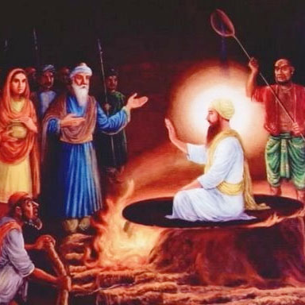

Sikhism


Guru Arjan Dev Ji (May 30 1606)
Chandu Shah, a Banker of Delhi, wielded a lot of influence at the Mughal court. He was looking for a suitable groom for his daughter. He was originally from Punjab and was keen that it should be a Punjabi youth. His emissaries saw Hargobind, son of Guru Arjan Dev at Amritsar. Agents informed about Hargobind to Chandu Shah. He however, had the ego of a spoiled rich man. He couldn't imagine giving his daughter in marriage to anyone below his status. He said "At best Arjan lives on the offerings of his followers," he objected "he has no social or political position". So proposal was accordingly dropped. Some Sikhs came to know about the Chandu Shah's remarks and they conveyed them duly to the Guru. As it happened, agents continued to search everywhere for a suitable match but couldn't find anywhere. Chandu Shah's wife felt that Hargobind was a good match for her daughter. Chandu Shah thus sent his agents to Guru asking them to finalize this proposal of marriage. Guru's Sikhs wanted Guru to decline this offer and Guru obliged his Sikhs by declining to accept the marriage asking that "Daughter of such rich household was not fit for the house of a Saint "Dervesh" like me". Chandu Shah could not imagine that the hand of his daughter could be refused by anyone. In a fury of temper, he decided to avenge himself on the Guru for the indignity hurled on him.
Chandu Shah and Guru's enemy Prithi Chand Sodhi, complained to Emperor Akbar that Adi Granth, which Guru Arjan had compiled has derogatory remarks against Muslims and Hindus. Emperor Akbar asked for Guru Arjan. Guru Arjan send Bhai Gurdas and Baba Buddha ji to the Mughal court along with the copy of Holy Granth.
Akbar died soon thereafter and was replaced by his son, Prince Salim, aka Jahangir. Jahangir was a debauched drunken, fanatic who believed in whatever his Sunni Mullah told him. He has left his kingdom on the whims of his queen Noorjahan and was always either drunk or hunting in wilderness. Chandu Shah complained to Jehangir again that Granth has some derogatory references to Islam and Hinduism. Jehangir issued orders for Guru Arjan to revise Holy Granth and remove any references to Islam and to pay two hundred thousands rupees as fine. The Guru told Mughal emperor Jehangir that his money was the sacred trust of the Sikh community and the hymns in the Holy Granth were revelation in praise of God: no one dare alter them. King was on his way to Kashmir. He was in hurry so he asked Murtza Khan to deal with Guru in the way he thought was best. Chandu Shah approached and poisoned his ears, urging him to extract the fine levied by the Emperor.
Murtza khan ordered the Subader of Lahore to arrest Guru Arjan. Guru Arjan dev ji were arrested and put in Jail at Lahore. When Sikhs heard that Emperor wanted two hundred thousand rupees, they started collecting money to pay the fine, Guru Arjan dev forbade them to pay the fine, citing it as against the ethics. Meanwhile, Qazi gave an injunction ordering the Guru Arjan to be tortured to death if he didn't agree to expunge the so-called derogator references to Islam in Adi Granth or he converts to Islam.
Guru was made to sit on a red hot iron sheet. They poured burning hot sand on his body. He was given a dip in boiling water. As the Guru was being persecuted thus Mian Mir, the Muslim sufi divine of Lahore, who had laid the foundation stone of the Golden Temple at Amritsar, came and begged the Guru to allow him to use his mystic power to undo those who were responsible for the Suffering inflicted upon him. The Guru heard Mian Mir and counselled patience. He told him that one must accept the will of God; not a leaf moves if (God doesn't ordain it. When Chandu's daughter-in-law heard about it, she bribed the jailor and came to the prison with sherbet and other delicacies to serve the Guru. The Guru declined to accept anything from Chandu's house but blessed the lady for her faith and devotion.
The Guru was tortured for five long days. When the tyrants found him bearing all the agony with perfect equanimity they became helpless. They were at a loss and didn't know what to do. At this the Guru asked for a bath in the river Ravi by the side of the Mughal fort in which he was imprisoned. Thousands of his followers watched the Guru walk to the river with tears in their eyes. His bare body glistened with blisters. There were blisters on his feet and he couldn't even walk properly "Sweet is Your will, O God; the gift of your Name alone I seek." said the Guru again and again.
Guru Arjan has left a massive volume of 2218 hymns marked their musicality and richness of imagery. They have continued to be popular with the Sikh musicians generation after generation. He wrote in a simple, conversational language, reflecting the various stages of thc spiritual journey of the human soul. His magnunn opus is the Sukhmani. the Psalm of Peace, is a long poem, ranking next only to the Jap ji of Guru Nanak in popularity with the devout. Though it doesn't form part of the essential set of five hymns enjoined upon the Sikhs to be recited every day, the Sukbmani is recited by a large number of devotees every morning and also at the hour of anxiety in the family. In Guru Arjan we have the culmination of all that Guru Nanak and the three Gurus following him stood for. They combined in themselves the best of Islam and Hinduism. Rather than alienating anyone, they strove for mutual understanding. Venerated equally by the Muslims and the Hindus, they were peace-loving, devoted to meditation and prayers, and service of their fellow-beings. In Sikhisnn the stress is on universal truth. All rites, rituals, and worship of god and goddesses have been dispensed with. Sikhism comprises love of God and service of humanity.
Wahe guru ji Ka Khalsa Wahe Guru ji ki Fateh